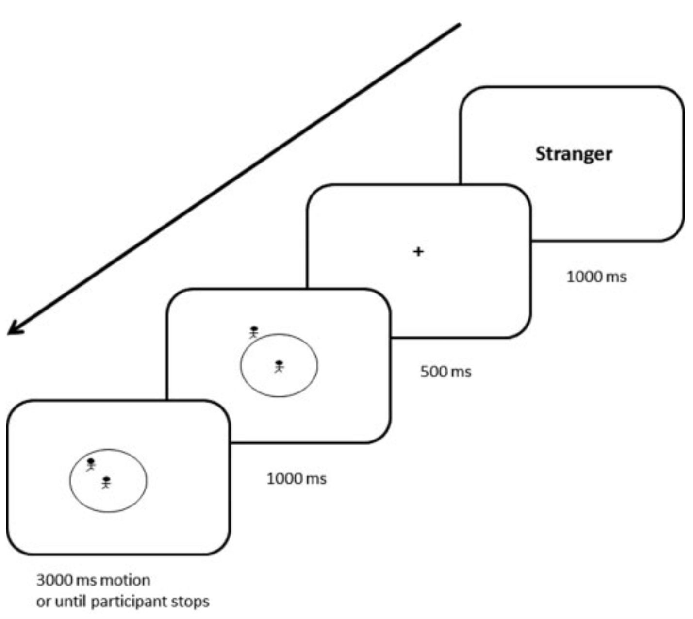
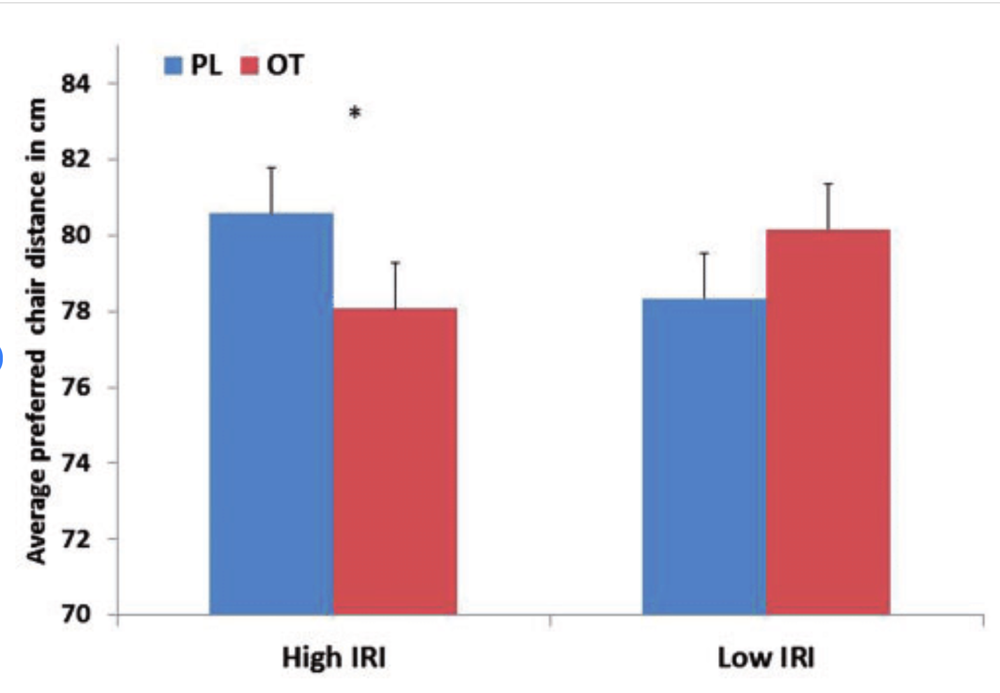

Perry et al. (2015)
催产素对人际距离的影响
📋 Contents（目录）
1️⃣ The Psychology Being Investigated（研究涉及的心理学）
Interpersonal distance （人际距离/个人空间） is an essential part of any social interactions. When we stand farther away from someone than expected, this sends a signal that we feel uncomfortable and less responsive. On the other hand, if we leave too little personal space, then the other person may feel uncomfortable or even threatened. （人际距离是任何社交互动的重要部分。当我们站得比预期更远时，这传递出我们感到不舒服、不愿回应的信号；反之，如果留出的个人空间过少，对方可能会感到不舒服甚至受威胁。）
📌 KEY WORD
interpersonal distance (personal space) （人际距离/个人空间）: The relative distance between people. It is the area of space around a person in which they prefer not to have others enter. It is like a bubble that moves with the person. This bubble may be larger or smaller depending on the social situation the person is in.

Edward T. Hall 在 1966 年提出了四种个人空间距离，基于中产阶级美国人的偏好：Intimate distance（亲密距离 <46cm）、Personal distance（个人距离 46–122cm）、Social distance（社交距离 122–210cm）、Public distance（公共距离 >210cm）。这个"气泡"会随着人移动，大小因情境而异。
According to the CIE syllabus, the main psychology being investigated in Perry et al. (2015) is interpersonal distance (personal space), social hormones and empathy. The study sits at the intersection of three social-approach concerns: (a) interpersonal distance (personal space) — the physical bubble a person maintains between themselves and others; (b) social hormones — particularly oxytocin (OT), which modulates social cognition and behaviour; and (c) empathy — the ability to share and infer another person's emotional state. Perry et al. tested whether intranasal OT (a social hormone) would increase interpersonal distance from a stranger, hypothesised to occur because OT increases empathy toward in-group members and suspicion toward out-group members. （按 CIE 教学大纲，本研究主要涉及的心理学现象是人际距离（个人空间）、社会激素与共情。研究处于三个社会取向关注点的交叉：(a) 人际距离（个人空间）——人在自己与他人之间维持的物理"气泡"；(b) 社会激素——尤其是催产素（OT），它调节社会认知与行为；(c) 共情——分享与推断他人情绪状态的能力。Perry 等人检验的是：鼻喷 OT（一种社会激素）是否会增加与陌生人之间的人际距离，其假设机制是 OT 会增强对内群体的共情、同时增强对外群体的警惕。）
Syllabus verbatim（CIE 教学大纲原文）
"Perry (2015) tested whether the social hormone oxytocin would affect the interpersonal distance that people keep from a stranger. The main psychology being investigated was interpersonal distance (personal space), social hormones and empathy."
The requirements humans have for personal space have been of great interest to social psychologists. Often we choose interpersonal distances based on our relationship to the person with whom we are interacting.
There are several factors that influence personal space requirements, in addition to how well we know the other person. Some of these factors are situational, such as culture (Beaulieu, 2004). Research has shown that different culture types show different personal space requirements.
Psychologists are interested in testing other factors that may influence personal space behaviour. One such factor is the social hormone known as oxytocin （催产素/OT）, which helps regulate social thinking and behaviour in humans and animals. OT can affect individuals in different ways depending on their situation, individual attributes and culture.
📌 KEY WORDS
- oxytocin (OT) （催产素）: A social hormone found in humans that heightens the importance of social cues and is linked to positive social behaviours such as helping others.
- empathy （共情能力）: How people respond to the observed experiences of others, seeing or imagining experiences from the other person's point of view and feeling concerned or upset for them.
- social salience （社会显著性）: The importance or attention someone gives to cues from other people, e.g. body language, interpersonal distance and expressions.
- social cues （社会线索）: Facial expressions or body language which people use to send messages to one another.
- Define interpersonal distance as "the area around a person where they prefer others not to enter"
- Name Hall's four zones: intimate (<46cm), personal (46–122cm), social (122–210cm), public (>210cm)
- Explain oxytocin as a "social hormone" affecting social thinking and behaviour
- Distinguish between social salience (attention to social cues) and empathy (understanding others' feelings)
- Note that OT effects are NOT uniform — they depend on individual differences like empathy level
💡 核心概念：人际距离就像每个人周围有一个看不见的"气泡"——太近让人不舒服，太远显得冷漠。Hall 把它分成四个区域。
🔬 研究动机：催产素（OT）被称为"爱的激素"，但它的作用比想象中复杂——不仅让我们更亲近他人，也可能让我们对外人更排斥。关键问题是：OT 对每个人的影响一样吗？
⚠️ 关键变量：共情能力（empathy）——有些人天生容易体会别人的情绪（高共情），有些人不太敏感（低共情）。研究者猜测 OT 的效果可能取决于你的共情水平。
2️⃣ Background（研究背景）
Perry et al. were interested in investigating how people's personal space preferences are affected by different factors. One of these is interpersonal distance; so they measured people's preferences for different social figures so they could compare how close people want to be to strangers or friends, for example. Perry et al. believed this preference could be influenced by the action of social hormones on individuals' preferences, so they also looked at the effect of OT.
Specifically, Perry et al. tested whether people with different empathy abilities were influenced by OT in the same or different ways when asked about their personal space preferences. In psychology this is known as an interaction effect （交互效应）, represented by '×', e.g. OT × empathy × condition.
Research suggests that empathy is an innate capacity, meaning that individuals are born with the ability to understand the thoughts and feelings of those around them. This relates to the nature side of the nature–nurture debate. However, this capacity is developed over time through interactions with others, for example between children and their parents. Through nurture, individuals develop empathy as they learn to identify and regulate their emotions.
📌 KEY WORDS
- interaction effect （交互效应）: The effect of two or more IVs (e.g. OT × empathy × condition) on a DV where the combined effect differs from each variable acting alone.
- differential effect （差异化效应）: When individuals experience different outcomes when exposed to the same stimulus.
- Explain why researchers used a mixed design: empathy = independent groups (naturally occurring), treatment = repeated measures (manipulated)
- Define interaction effect: when the effect of one IV depends on the level of another IV
- Connect to Nature-Nurture debate: empathy has both innate components (nature) and learned development (nurture)
- Identify the three IVs in Experiment 1: condition (stranger/authority/friend/ball), treatment (OT/placebo), empathy (high/low)
🔍 研究问题：OT 对人际距离的影响是否因人而异？具体来说，高共情者和低共情者在接受 OT 后，选择的人际距离会不会有不同方向的变化？
📐 设计思路：这是一个典型的交互效应检验——不是看"OT 有没有效果"，而是看"OT 的效果是否取决于共情水平"。如果两组人的变化方向相反，就说明存在 differential effect（差异化效应）。
🧬 Nature vs Nurture：共情能力既有先天成分（nature），也通过后天经历发展（nurture）。这为后续讨论个体差异提供了理论基础。
3️⃣ Aim（研究目的）
The aim was to test the differential effect of oxytocin (OT) on personal space preference in relation to a person's empathy ability. The researchers believed that controlling for empathic traits would reveal the effect of OT on interpersonal distance choices. Perry et al. wanted to find out whether highly empathic individuals would prefer closer distances while low empathy individuals would prefer greater interpersonal distances when given OT.
（检验催产素是否会根据一个人的共情能力水平不同而对偏好的人际距离产生不同的影响。）
- Aim must include BOTH variables: oxytocin (IV) AND empathy (moderator variable)
- Key phrase: "test the differential effect" — not just test if OT works, but HOW it differs between groups
- Prediction: high empathy + OT → closer distance; low empathy + OT → greater distance
- This is a directional hypothesis based on social salience theory
🎯 Aim 精髓：不是简单问"OT 有没有用"，而是问"OT 对不同的人是不是有相反的效果？"
📊 假设方向：研究者预测——
· 高共情者 + OT → 更愿意靠近别人
· 低共情者 + OT → 更想远离别人
如果结果符合这个预测，就能证明 OT 的作用是差异化的，而不是一刀切的。
4️⃣ Method（研究方法）
4.1 Research method and design（研究方法与设计）
This study was a laboratory experiment （实验室实验） conducted at the University of Haifa. It used a mixed experimental design （混合实验设计）:
| Variable（变量） | Type（类型） | Levels（水平） | Design（设计方式） |
|---|---|---|---|
| Empathy | Individual difference (quasi-IV) | High vs Low | Independent groups design（独立组设计） |
| Treatment | Manipulated IV | OT vs Placebo | Repeated measures design（重复测量设计） |
| Condition (Exp.1 only) | Repeated measures IV | Stranger / Authority / Friend / Ball | Repeated measures design |
| DV | Preferred interpersonal distance (measured as % of radius in Exp.1; cm in Exp.2) | ||
Mixed design（混合设计）: Combines independent groups design (for naturally occurring variables like empathy) and repeated measures design (for manipulated variables like treatment). This allows researchers to test interaction effects between participant characteristics and experimental conditions.
4.2 Sample（样本）
54 male undergraduates from the University of Haifa, aged 19–32 years (mean age = 25.29). All participants had normal vision and no history of psychiatric or neurological disorders. Five participants were left-handed.
| Group（组别） | N（人数） | Empathy Score Range（共情分数范围） | Mean Age（平均年龄） |
|---|---|---|---|
| High Empathy Group | 20 | ≥ 40 (IRI) | 23.9 years |
| Low Empathy Group | 20 | < 33 (IRI) | 25.9 years |
Double-blind technique（双盲技术）: Neither participants nor experimenters knew who received OT or placebo. This prevents demand characteristics and researcher bias.
Counterbalancing（平衡法）: Half did OT first then placebo; half did placebo first then OT. This controls for order effects in the repeated measures design (ABBA design).
- Identify research method: laboratory experiment at University of Haifa
- Explain WHY mixed design was used: empathy cannot be manipulated (natural difference), but treatment can
- List all three IVs and their operationalisation clearly
- Note sample limitations: all-male, university students, Israeli culture → limits generalisability
- Explain double-blind procedure and its purpose (control demand characteristics)
- Describe counterbalancing: ABBA design to control order effects
🔬 方法精髓："能操控的变量用重复测量，不能操控的变量用独立组"——这是混合设计的核心逻辑。
👥 样本问题：54 名男性大学生，全部来自海法大学。这意味着结果可能不适用于女性、老年人、或其他文化背景的人。但好处是控制了性别变量（避免男女在空间偏好上的差异干扰结果）。
🛡️ 控制手段：双盲（消除被试和主试偏差）+ 平衡法（消除顺序效应）。这两个是重复测量设计的标配操作。
4️⃣b Procedure（实验程序）
Step 1: OT Administration（催产素施用）
Participants were randomly administered either 24 IU intranasal OT or placebo saline solution. Nasal drops were self-administered under supervision. Double-blind procedure used throughout.
Step 2: Empathy Assessment（共情评估）
After administration, participants completed the Interpersonal Reactivity Index (IRI) — a 28-item self-report questionnaire measuring empathy. Then waited 45 minutes in a quiet room reading nature magazines (time for OT to take effect).
Step 3: Experiment 1 — CID Paradigm（舒适人际距离范式）
A circle displayed on screen. Participants imagined themselves at the centre while a figure approached along a radius. They pressed space bar at the point where they wanted the figure to stop.

Four conditions: stranger, authority figure, close friend, rolling ball (control). 24 trials per condition = 96 trials total. DV = percentage of remaining distance from centre.
Step 4: Experiment 2 — Choosing Rooms（选择房间）
Participants told they would discuss personal topics with another participant. Shown pairs of rooms with two chairs; asked to choose preferred room layout.

Experimental condition: distance between chairs (20–140 cm, intervals of 20 cm) + angle (0°/45°/90°).
Control condition: distance between table and plant (200–320 cm) — tests non-social preference.
Total: 168 pairs shown, each twice.
为什么需要两个实验？Experiment 1 用虚拟动画测量"理想距离"，Experiment 2 用真实房间布局选择来验证。两个实验互相印证（convergent validity），而且 Experiment 2 还有一个巧妙的控制条件（桌子和植物的距离）——如果 OT 只影响椅子距离而不影响桌子植物距离，就证明 OT 特异性地调节了社交相关的偏好，而非一般性的空间偏好。
- Describe CID paradigm step-by-step: imagine self at centre → figure approaches → press spacebar to stop
- List the four conditions in Exp.1: stranger, authority, friend, ball (ball = control condition)
- Explain purpose of ball control: tests baseline spatial preference without social meaning
- Describe Exp.2 choosing rooms task: choose preferred chair distance/angle in room pairs
- Identify control condition in Exp.2: table-plant distance (non-social comparison)
- Note 45-minute waiting period after OT administration (standard for intranasal OT studies)
📋 实验流程：给药 → 做问卷 → 等45分钟 → 做实验1(CID) → 一周后 → 再做一次（平衡顺序）→ 做实验2(选房间)
🎮 实验1 (CID)：电脑屏幕上显示一个圆，被试想象自己在圆心，有个虚拟人物沿半径靠近。按空格键表示"希望他停下的位置"。四种人物：陌生人、权威、朋友、球（控制条件）。
🏠 实验2 (选房间)：给被试看两间几乎一样的房间（只有椅子距离或角度不同），让他选更喜欢哪间。巧妙之处在于还有一组"桌子和植物距离不同"的房间作为非社交控制条件。
5️⃣ Results（研究结果）
5.1 Experiment 1: CID Results（舒适人际距离实验结果）
Finding 1: Main Effect of Condition（条件主效应）
Preferred distance varied significantly by who was approaching:
| Stranger（陌生人） | Authority（权威） | Ball（球） | Friend（朋友） |
|---|---|---|---|
| 39.82% | 34.12% | 20.20% | 12.46% |
Finding 2: Treatment × Empathy Interaction（治疗×共情交互效应）⭐核心发现
OT had opposite effects on high vs low empathy groups:
| Oxytocin (OT) | Placebo（安慰剂） | Effect of OT | |
|---|---|---|---|
| High Empathy | 23.29% | 26.11% | ↓ Closer (−2.82%) |
| Low Empathy | 30.20% | 26.98% | ↑ Farther (+3.22%) |
这是本研究最重要的发现！
· 高共情组：OT 组（23.29%）< 安慰剂组（26.11%）→ 用了 OT 后愿意让别人靠得更近！
· 低共情组：OT 组（30.20%）> 安慰剂组（26.98%）→ 用了 OT 后反而想让别人离得更远！
这就是 differential effect（差异化效应） 和 interaction effect（交互效应） 的完美例证。
Finding 3: Three-Way Interaction（三重交互效应）
Treatment × Condition × Empathy was also significant. For high empathisers with OT, the ball (previously neutral) became statistically different from stranger and authority — suggesting OT enhanced social interpretation even of ambiguous stimuli.
| Oxytocin (OT) | Placebo | |
|---|---|---|
| Stranger | 39.73% | 38.55% |
| Authority | 30.55% | 33.92% |
| Ball | 14.42% | 20.96% |
| Friend | 8.49% | 11.02% |
5.2 Experiment 2: Choosing Rooms Results（选择房间实验结果）
Results replicated the key finding from Experiment 1:
| Oxytocin (OT) | Placebo | Effect of OT | |
|---|---|---|---|
| High Empathy | 78.07 cm | 80.58 cm | ↓ Closer (−2.51 cm) |
| Low Empathy | 80.14 cm | 78.33 cm | ↑ Farther (+1.81 cm) |

- In Experiment 1: CID, explain how mean percentage distance was calculated from the raw data.
- Using Table 5.3 data, draw a bar chart comparing OT vs Placebo for both groups. Include title, axis labels, and legend.
- Why is a bar chart appropriate for this data type?
- Memorise Table 5.2 pattern: Stranger (39.82%) > Authority (34.12%) > Ball (20.20%) > Friend (12.46%)
- KEY FINDING: Table 5.3 shows OPPOSITE directions — high empathy gets CLOSER with OT, low empathy gets FARTHER
- Be able to calculate effect size: High emp −2.82%, Low emp +3.22% (both meaningful changes)
- Three-way interaction means OT's effect depends on BOTH who is approaching AND your empathy level
- Exp.2 replicates Exp.1 finding → increases confidence in result (replication validity)
- Control condition (table-plant) showed NO OT effect → supports social salience specificity
📊 结果层次（由浅入深）：
第一层（主效应）：陌生人 > 权威 > 球 > 朋友 —— 符合常识和 Hall 理论。
第二层（二重交互）：OT 对高低共情组产生相反效果 —— 这是论文的核心贡献！
第三层（三重交互）：在高共情+OT条件下，连"球"这个中性刺激都变得有意义了 —— 说明 OT 放大了对社会线索的整体敏感性。
✅ 收敛效度：实验一（虚拟动画）和实验二（真实房间选择）得到相同模式的结果，大大增强了结论的可信度。
🎯 社会显著性假说验证：OT 只影响椅子距离（社交相关），不影响桌植物距离（非社交）—— 说明 OT 不是让你对所有东西都更敏感，而是特异地放大了对社会信息的关注。
6️⃣ Conclusion（结论）
The administration of OT enhances social cues in opposite ways for individuals with different empathetic abilities, supporting the idea of social salience. People with low empathic ability respond to OT with a preference for increased personal distance, while those with high empathic ability respond with a preference for decreased personal distance.
The results also confirmed previous findings that people need less distance between themselves and close friends than with strangers.
- Conclusion must state the OPPOSITE direction of effects clearly
- Link conclusion back to original aim: aim was to test differential effect → conclusion confirms it exists
- Connect to social salience hypothesis: OT amplifies social cue processing, direction depends on baseline empathy
- Note confirmation of classic finding: friends < strangers in distance preference
🎯 结论一句话：OT 不是"亲密激素"，而是"社会信息放大器"——它让你更关注社交线索，但关注后的反应取决于你原本的性格（共情水平）。
⚠️ 常见误区：不要说"OT 让人更亲近"——这是错的！正确的说法是"OT 对高共情者产生亲近期望，对低共情者产生疏远期望"。
7️⃣ Strengths and Weaknesses（优缺点评价）
Strengths（优点）
- Standardised procedure（标准化程序）: Both experiments were computer-programmed. Images consistent for every participant (2 seconds each). Computer-generated stimuli ensure maximum accuracy and consistency → high reliability.
- Double-blind technique（双盲技术）: Neither participants nor experimenters knew condition allocation → reduces demand characteristics and researcher bias.
- Counterbalancing（平衡法）: ABBA design for treatment order → controls order effects (practice effects, fatigue).
- Mixed design（混合设计）: Allows investigation of interaction effects between individual differences (empathy) and experimental manipulation (OT) — this is the study's greatest strength.
- Controlled extraneous variables（额外变量控制良好）: All-male sample eliminates gender confound. Standardised 45-min wait time. Same time of day for both sessions.
- Convergent validity（收敛效度）: Two different paradigms (CID virtual animation + real room choice) produced same pattern of results → increases confidence in findings.
- Control condition in Exp.2（实验二的控制条件）: Table-plant distance showed no OT effect → demonstrates specificity to social cues (supports social salience hypothesis).
Weaknesses（缺点）
- Lacks ecological validity（缺乏生态效度）: Laboratory setting with computer tasks lacks mundane realism. Real-life personal space decisions involve complex dynamic cues (facial expressions, tone, gestures) not present in the study.
- Sample limitations（样本局限）: All-male, undergraduate, Israeli sample → limited generalisability to females, older adults, and other cultures where personal space norms differ greatly.
- Only tested one behaviour（只测试了一种行为）: Personal space involves more than physical distance — eye contact, body orientation, etc. were not measured.
- Deception in Exp.2（实验二的欺骗）: Participants told they would discuss personal topics with another participant, but this never happened. Although unlikely to cause harm, this raises minor ethical concerns about informed consent.
⚠️ Exam Tip: Evaluation Structure
In CIE exams, you need to evaluate ONE strength AND ONE weakness in detail (typically 6–10 marks each). Choose points you can elaborate with evidence from the study. Always link back to validity (internal/external/ecological) or reliability.
- TOP STRENGTH: Mixed design enables interaction testing — explain WHY this matters (individual differences matter!)
- TOP WEAKNESS: Lack of ecological validity — computer tasks ≠ real social interactions
- For each point: identify → explain → give specific evidence from study → link to validity/reliability
- Convergent validity is a sophisticated point that shows deep understanding
- Sample bias (male-only, single culture) is always a safe evaluation point for any study
✅ 最强优点：混合设计让研究者能够检验交互效应——这是单设计做不到的。加上双盲+平衡法+标准化程序，内部效度很高。
❌ 最大弱点：生态效度低。在电脑屏幕上选距离和在真实社交场景中保持距离完全是两回事。不过这也是心理学实验的经典取舍——控制 vs 真实性，你很难同时拥有两者。
🔗 高级加分点：收敛效度（两种范式得出相同结果）和控制条件的特异性（只影响社交距离不影响非社交距离）——这两个点在考试中写出来会让阅卷老师眼前一亮。
8️⃣ Ethical Issues（伦理问题）
The study was ethically strong overall:
| Ethical Principle（伦理原则） | How Addressed（如何处理） | Assessment（评价） |
|---|---|---|
| Informed consent（知情同意） | Obtained from all participants before participation | ✅ Adequate |
| Right to withdraw（退出权） | Not explicitly mentioned (potential limitation) | ⚠️ Unclear |
| Protection from harm（避免伤害） | No side effects reported; painless nasal administration | ✅ Good |
| Deception（欺骗） | Minor deception in Exp.2 (false cover story about discussion) | ⚠️ Minimal, justified |
| Debriefing（事后解释） | Full debriefing provided; true aim explained afterwards | ✅ Thorough |
| Ethics committee approval（伦理委员会批准） | Approved by University of Haifa + Hadassah Medical Centre | ✅ Proper oversight |
伦理方面总体做得不错。唯一的小问题是 Experiment 2 中有轻微欺骗（告诉被试要和人讨论个人话题，但实际并没有）。研究者判断这不太可能造成心理困扰，且事后做了充分解释（debriefing）。所有被试报告 OT 和安慰剂都没有副作用。
- Overall: ethically strong with proper consent, debriefing, and committee approval
- Main issue: minor deception in Exp.2 — be able to justify why this was acceptable (no distress likely)
- Note that right to withdraw was NOT explicitly mentioned — this is a valid criticism
- Physical safety well-managed: no side effects, painless administration
- Always use ethical guidelines terminology: informed consent, debriefing, protection from harm
🛡️ 伦理总评：整体合格，甚至可以说是"伦理典范"——有同意、有批准、有解释、无伤害。
⚠️ 唯一瑕疵：实验二的小欺骗。但在心理学研究中，轻微欺骗如果不会造成困扰且有充分的事后解释，通常是被接受的。
📝 考试技巧：如果你要批评伦理问题，可以提"退出权未明确说明"——这是一个比较细致的观察，能展示你对 BPS 伦理准则的熟悉程度。
8️⃣b Issues, Debates and Approaches（议题、争论与研究取向）
Perry et al. (2015) sits at the intersection of the Biological Approach (oxytocin as a hormone) and the Social Approach (interpersonal distance as a social phenomenon). Five sub-sections below cover the most exam-relevant I&D angles, with specific evidence drawn from the study.
8b.1 Nature vs Nurture（先天 vs 后天）
Perry et al.'s findings support the nature side of this debate: oxytocin is a biologically produced hormone with measurable effects on social cognition, and individual differences in baseline empathy (a partially heritable trait) shape how OT exerts its influence. The interaction effect (OT × empathy) implies that biology and pre-existing disposition together determine social behaviour — not learned rules.
However, the nurture side is visible too. Empathy itself develops through social experience (attachment relationships, cultural norms, observational learning). A participant's "high empathy" classification reflects both innate temperament and accumulated social learning. The fact that OT effects depend on empathy level shows nurture is upstream of biology, not separate from it.
Cross-study link: Compare with Hassett et al. (Biological / Social), which used hormone assays to show prenatal testosterone affects later toy preferences in rhesus monkeys — another nature-leaning finding with a clear biological mechanism. Both studies treat hormones as causal levers; Perry et al. uniquely shows that the same hormone can produce opposite behaviour depending on individual context.
8b.2 Reductionism vs Holism（还原论 vs 整体论）
The study is strongly reductionist: it reduces the rich phenomenon of interpersonal-distance regulation to a single biological variable (OT administration) and a single individual-difference variable (empathy). The CID paradigm operationalises "personal space" as a digital stop-distance, a clean numerical DV.
Critics argue this is over-simplification. Real personal-space behaviour is shaped by culture, gender, mood, relationship history, room architecture, and many other situational factors that the laboratory cannot capture. The two-room choice in Experiment 2 is a more holistic paradigm than the CID, but still a far cry from genuine everyday social encounters. A holistic reading would acknowledge that OT is one of many influences on social behaviour — and that the same hormone can produce opposite effects in different people.
8b.3 Individual vs Situational Explanations（个体 vs 情境解释）
The study strongly supports an individual explanation: the OT × empathy interaction effect is, by definition, a within-person trait-based result. Empathy level (an individual disposition) determines whether OT brings people closer or pushes them farther. Without measuring individual differences, the study would have missed the most important finding.
However, the situational context also matters. The laboratory setting is highly artificial — participants were alone in a room, judging how close they would let a stranger approach, with no real social partner present. In real social encounters, situational factors (the other person's behaviour, cultural norms, room size) routinely override individual dispositions. The study therefore demonstrates that individual differences matter, but the generalisability to real-life social situations is limited.
8b.4 Free Will vs Determinism（自由意志 vs 决定论）
The findings lend themselves to a deterministic reading: a single spray of synthetic oxytocin shifted participants' behaviour in measurable ways, suggesting that neurochemistry directly determines social choices. The opposite-direction effect (closer for high-empathy, farther for low-empathy) implies biology overrides volitional control.
The opposing free-will view notes that participants could, in principle, override their biological response — for example, by consciously deciding to maintain professional distance regardless of how OT made them feel. Furthermore, situational factors (cultural norms about personal space) are themselves products of human choice, not biology. Perry et al.'s findings show that biology influences behaviour; they do not show that biology determines it.
8b.5 Use of Non-Human Animals in Research（动物研究伦理）
This study did not use animals, but the I&D topic of "Use of non-human animals" is still relevant when comparing with other biological studies. Oxytocin has been studied extensively in rodents (prairie voles, in particular), where OT receptor distribution in the brain predicts pair-bonding behaviour. Animal research on OT provides invasive evidence (e.g., receptor knockouts) that cannot ethically be obtained in humans.
Compared with Hassett et al. (which did use rhesus monkeys to study hormone effects on social behaviour), Perry et al. illustrates how a similar research question (how do hormones shape social behaviour?) can be addressed humanely in humans using non-invasive nasal spray, while complementary animal work provides deeper mechanistic insight.
8b.6 Application of Psychology to Everyday Life（心理学在日常生活中的应用）
Perry et al.'s findings have clear clinical and applied value. The social-salience hypothesis (OT amplifies existing social-cognitive tendencies) has informed research on autism spectrum disorder (where OT trials have produced mixed results, consistent with Perry's "depends on baseline" finding), social anxiety disorder, and psychopathy. The study also warns against simplistic "OT = love hormone" media narratives, promoting a more nuanced public understanding of neurochemical influence.
More broadly, the study demonstrates the value of using mixed experimental designs to detect interaction effects — a methodological lesson that applies beyond OT research to any intervention where individual differences may moderate the outcome.
- Nature vs Nurture: Nature (OT = biological hormone, empathy partially heritable) + Nurture (empathy develops through social experience). Must Know
- Reductionism vs Holism: Reduces personal space to OT × empathy; real behaviour also depends on culture, gender, mood. Must Know
- Individual vs Situational: Individual (interaction effect) vs Situational (lab setting is artificial; real encounters override dispositions). Common Q
- Free Will vs Determinism: Biology influences but does not strictly determine behaviour; situational norms also matter. Context
- Use of animals: Prairie vole research complements human OT work; Perry et al. used non-invasive nasal spray. Context
- Application: Informed autism / social anxiety / psychopathy research; challenged "OT = love hormone" narrative. AO2 Gold
1. 先天 vs 后天：偏向先天——OT 是生物激素，基线共情有遗传成分。但后天也起作用：共情本身通过社会经历（依恋、文化规范）发展。OT × 共情交互效应提示先天与后天共同决定社交行为。
2. 还原论 vs 整体论：典型还原论——把丰富的人际距离调节简化为单一生物变量 + 单一个体差异变量。批评者认为真实社交受文化、性别、情绪、关系史等多因素影响。
3. 个体 vs 情境：强烈支持个体解释——OT × 共情交互效应本就是个体差异驱动的发现。但情境不能忽略：实验室是高度人工环境，缺乏真实社交伙伴。
4. 自由意志 vs 决定论：OT 可在数小时内改变行为 → 决定论倾向。但参与者理论上可主动抗拒，文化规范本身也是人类选择产物 → 自由意志仍有空间。
5. 动物研究：本研究未直接用动物，但啮齿动物（如草原田鼠）的 OT 受体研究提供了更深入的机制证据。与 Hassett 等直接用猕猴的研究互补。
6. 应用价值：研究结果推动 ASD / 社交焦虑 / 精神病态研究；纠正了"OT = 爱的激素"的媒体过度简化叙事；展示了混合实验设计在检测交互效应中的方法论价值。
考试要点：最常考 3 项：①先天/后天 ②还原论/整体论 ③应用价值。OT × 共情 交互效应是本研究的独有特征，写答案时一定要带这个证据链。
9️⃣ Summary（总结）
Perry et al.'s study investigated the effects of oxytocin (OT) on personal space choice and its interaction with empathy. Using two laboratory experiments (CID paradigm + choosing rooms), the study found a consistent interaction effect:
📊 Key Findings at a Glance
| Group | OT Effect on Distance | Direction | Interpretation |
|---|---|---|---|
| High Empathy | ↓ Decreases | Closer | OT enhances social approach motivation |
| Low Empathy | ↑ Increases | Farther | OT heightens social threat sensitivity |
The findings support the social salience hypothesis: OT does not simply make everyone "more social" — rather, it amplifies existing social-cognitive tendencies, producing opposite behavioural outcomes depending on baseline empathy levels.
· Challenges simplistic "OT = love hormone" narrative
· Shows individual differences matter in neurochemical effects
· Has implications for understanding autism, social anxiety, and psychopathy
· Demonstrates importance of using mixed designs to detect interaction effects
🔟 Study Questions（复习题）
The following questions mirror CIE A-level Psychology exam style. Click each card to reveal the model answer with mark scheme guidance.
(a) What are the advantages of using the computerised version in the study by Perry et al.? [4 marks]
(b) What limitations might there be to using the CID to measure personal space preferences? [4 marks]
(a) Advantages of computerised CID:
- Participants move a virtual figure (life-size image) on screen rather than imagining an abstract stop point — closer to real-world judgement of personal space.
- Precise distance measurement in centimetres, eliminating human recording error.
- Standardised across participants — every participant sees the same stimulus at the same scale.
- Faster data collection — multiple trials can be completed in a single session.
- Measures preference, not real behaviour — what people say is comfortable may differ from what they actually do in a real encounter.
- Low ecological validity: 2D screen-based task lacks the sensory richness (smell, body heat, eye contact) of real interpersonal distance.
- Participants are alone with the virtual figure — no real social feedback, so social motivation is reduced.
- The figure approaches in a straight line — real-life approaches are often oblique, with pauses, smiles, eye contact, etc.
(a) Why do psychologists use controls? [2 marks]
(b) Which stimulus was used as a control in Experiment 2? [2 marks]
(a) Why use controls:
- To eliminate alternative explanations / extraneous variables (e.g., individual differences in mood, baseline interpersonal preference).
- To make sure any difference observed is due to the IV (OT vs placebo), not to chance variation — supports cause-and-effect, increases internal validity.
- The nonsocial object (a chair / empty room comparison) acted as the control — participants indicated how close they would sit to a person versus an object.
- This separates social distance preferences from general spatial preferences, isolating the OT effect to social stimuli specifically.
Model answer:
- Informed consent: All participants gave consent before the experiment; for the nasal-spray procedure, consent specifically covered OT administration and its known effects. (1 mark + 1 elaboration)
- Right to withdraw: Not explicitly mentioned in the original paper — this is a valid criticism, though participants could decline at any point before/after the procedure. (1 mark)
- Protection from harm: OT was administered via painless nasal spray; no physical side effects reported. Painless procedure minimised risk. (1 mark + 1 elaboration)
- Debriefing: Participants were fully debriefed after the study; the true aim (OT's effect on social distance) was explained. (1 mark)
- Deception: Minor deception in Experiment 2 (false cover story about a discussion) was justified because no distress was caused and full debriefing followed. (1 mark)
- Ethics committee approval: Approved by the University of Haifa and Hadassah Medical Centre — proper oversight before the study began. (1 mark + 1 elaboration)
Model answer:
- Sample size: 65 participants (Experiment 1) and 56 participants (Experiment 2) — undergraduate students at the University of Haifa.
- Demographics: Mixed-gender sample; mean age approximately 25 (young adult); all Hebrew-speaking Israeli students.
- Sampling method: Volunteer / opportunity sample — recruited from the university community, not randomly selected.
- Pre-screening: Participants were classified as high vs low empathy using the Interpersonal Reactivity Index (IRI) median split — this classification was the basis of the independent groups design.
Model answer:
- Oxytocin (OT) was the independent variable (IV) — half the participants received a dose of synthetic OT, the other half received a placebo (saline) spray.
- OT was administered via intranasal spray approximately 45 minutes before testing — a non-invasive method that allows OT to cross the blood-brain barrier.
- OT's role was to test the social salience hypothesis: whether OT amplifies existing social-cognitive tendencies (measured as the dependent variable of personal-space choice).
- The comparison of OT vs placebo allowed researchers to attribute differences in personal-space preferences specifically to OT, controlling for expectation effects via the placebo design.
AO1 — Definition:
- A mixed experimental design combines independent-measures and repeated-measures elements for different IVs.
- In Perry et al., the OT vs placebo IV was independent measures (different participants received different doses) — this is essential because OT effects persist and cannot be "washed out" between conditions.
- The empathy level (high vs low) was also independent measures (different participants in each group, based on pre-screening median split).
- The stimulus type (human figure vs control object) was repeated measures — same participants judged both stimuli, controlling for individual differences in baseline distance preference.
- OT cannot be repeated-measures because its effects are long-lasting (carryover would confound).
- Empathy is a stable trait, so it must also be independent-measures.
- Stimulus type can safely be within-subjects because the virtual figure and the control object can be presented in counterbalanced order.
AO1 — Description:
- Participants sat in front of a computer screen and watched a life-size virtual figure approach them gradually.
- They pressed a key when the figure reached a distance they would find comfortable if it were a real person standing in front of them.
- The same procedure was repeated with a rolling ball (control) — participants indicated the comfortable distance for the ball to stop.
- The order of social vs non-social trials was counterbalanced across participants.
- Distance was measured in centimetres from the participant's position to the virtual figure.
- Including the ball allowed researchers to separate social distance preferences from general spatial preferences — if OT only affects distance to the figure and not the ball, the effect is social, not spatial.
- Counterbalancing controlled for order effects.
AO1 — Findings:
- Experiment 1 (CID paradigm): There was a significant OT × empathy interaction. High-empathy participants given OT allowed the figure to come closer than those given placebo; low-empathy participants given OT required the figure to stay farther away than those given placebo.
- For the non-social ball stimulus, there was no significant effect of OT or empathy — the OT effect was specific to social stimuli.
- Experiment 2 (choosing rooms): Replicated the interaction — high-empathy OT participants chose closer rooms (sitting nearer a stranger); low-empathy OT participants chose farther rooms.
- The findings support the social salience hypothesis: OT does not simply make everyone more social — it amplifies existing social-cognitive tendencies.
- For high-empathy individuals, OT enhances social approach motivation (closer distance).
- For low-empathy individuals, OT heightens social threat sensitivity (farther distance).
- The convergence of two paradigms (CID + room choice) strengthens the conclusion — converging evidence for the social salience account.
L4 Model answer:
- Why low EV (study-specific): In Experiment 1, participants sat alone in a quiet room watching a virtual figure on a screen and pressed a key when the figure reached a comfortable distance. In real social encounters, distance is negotiated dynamically — through eye contact, body language, mutual adjustments — none of which the CID paradigm captures. In Experiment 2, participants chose between rooms with a stranger already in them, but they did so without conversation or actual physical approach.
- Mechanism → label: Because the measurement context is so unlike everyday social encounters, findings may not generalise to real life — this is the textbook definition of low ecological validity.
- Evaluate — supporting it as significant: Even a small OT effect could have huge real-world consequences (e.g., for therapy, autism intervention). If the laboratory measure does not reflect real social behaviour, then the practical implications are limited. The findings need to be replicated in more naturalistic settings (e.g., face-to-face interactions) before they can be applied.
- Evaluate — qualifying it: Some controlled features actually increase confidence in the causal claim: the IV (OT vs placebo) was manipulated, the DV (stop distance) was precise, and the interaction effect replicated across two paradigms. Low EV does not invalidate the causal finding — it limits the generalisation, not the validity of the inference within the study.
- Conclusion: Low EV is a real weakness for applied claims, but the study's strength lies in establishing that OT's effect is conditional on baseline empathy. Further field research is needed.
Strength — Use of a placebo control (double-blind design):
- Evidence: Participants received either OT or a placebo (saline) nasal spray in identical containers; both the participant and the experimenter administering the spray were blind to which dose each participant received.
- Mechanism → label: Because participants did not know which group they were in, demand characteristics (guessing the hypothesis and adjusting behaviour to fit) were minimised. This supports a cause-and-effect inference between OT and the observed behaviour, increasing internal validity.
- Bonus: The convergence of two paradigms (CID + room choice) provides converging evidence, further strengthening confidence in the finding.
- Evidence: In Experiment 1, participants were alone in a quiet room watching a virtual figure on a screen and pressing a key. In Experiment 2, they chose between rooms without actually interacting with another person.
- Mechanism → label: Real social encounters involve mutual eye contact, body language, conversation, and emotional feedback — none of which were present. The artificial setting means findings may not generalise to real-world OT effects, reducing ecological validity.
- Counter-argument: Lab control actually increases internal validity (causal inference is strong). The trade-off between control and realism is inherent to laboratory experiments — this weakness is not unique to Perry et al.